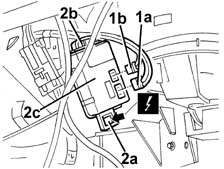

5040D18 air conditioner control unit - r r
- Path
- Procedures > 50 AUXILIARY UNITS > 5040 AIR CONDITIONING CASING AND COMPONENTS > 5040D AIR CONDITIONER CONTROLS > 5040D18 air conditioner control unit - r r
- Kind
- repair procedure (removal / refitting; the operation number is the code)
- Applies to
- all engines; all production periods
- Interactive page
- https://sloeber94.github.io/elrnDB-fMltpl/en/#/2891830
Applies to: all engines; all production periods; only with equipment: Automatic Air Conditioning
 Removing
Removing
 Refitting
Refitting1. Disconnect the electrical connections (1a, 1b) from the control unit.
 | Name | Connector |
|---|---|---|
1a | Climate control system control unit |
| Name | Connector |
|---|---|---|
1b | Climate control system control unit |
2. Press retainer (2a) and disconnect it and then press retainer (2b) and keep the control unit (2c).

Applies to: all engines; all production periods; only with equipment: Automatic Air Conditioning
Refitting
RemovingCheck that the control unit is undamaged.
Position the control unit and fit it to the retainers.
Connect the electrical connections .
Check the operation of the control unit using the Examiner or another tester.